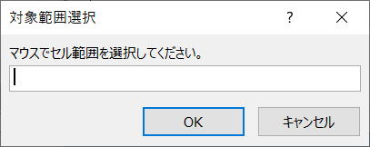
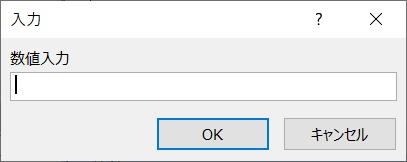

第100回.InputBoxメソッド（インプットボックス）

InputBoxメソッドはApplicationのメソッドで、ユーザー入力用のダイアログ ボックスを表示し、
表示したダイアログ ボックスに入力された情報を受け取ることが出来ます。
マクロVBAの途中でユーザーに何らかの値を入力してもらう事で、その後の処理にその値を使う場合に使用します。
InputBox関数には無いTypeという引数を使うことで、より活用範囲が広がります。
InputBox関数では、文字列の入力だけしかできませんが、
InputBoxメソッドでは、
数値に限定したり、セル参照をすることが出来ます。
InputBoxメソッド
[OK] をクリックすると、ダイアログ ボックスに入力した値が返されます。
[キャンセル] をクリックすると、InputBox は False を返します。
| Prompt | ダイアログ ボックスに表示するメッセージを指定します。 この引数には、文字列、数値、日付、またはブール値を指定できますが、自動的に値は文字列型に変換されます。 |
| Title | ダイアログ ボックスのタイトルを指定します。 この引数を省略すると、既定値の "入力" がタイトル バーに表示されます。 |
| Default | ダイアログ ボックス内のテキスト ボックスに表示する初期値を指定します。 この引数を省略すると、テキスト ボックスには何も表示されません。 この値には、Range オブジェクトを指定することもできます。 |
| Left | 画面の左上隅を基準として、ダイアログ ボックスの X 座標をポイント(ポイント: 印刷する文字のサイズ (高さ) を指定する基本単位。 1 ポイントは、約 0.0353 cm (1/72 インチ) です。)単位で指定します。 |
| Top | 画面の左上隅を基準として、ダイアログ ボックスの Y 座標をポイント単位で指定します。 |
| HelpFile | 対象ダイアログ ボックスで使うヘルプ ファイルの名前を指定します。 引数 HelpFile および引数 HelpContextID が共に指定されていれば、ダイアログ ボックス内に [ヘルプ] ボタンが表示されます。 |
| HelpContextID | 引数 HelpFile で指定したヘルプ ファイル内のヘルプ トピックのコンテキスト ID 番号を指定します。 |
| Type |
返されるデータの型を指定します。 |
Type
| 値 | 意味 |
| 0 | 数式 |
| 1 | 数値 |
| 2 | 文字列 (テキスト) |
| 4 | 論理値 (True または False) |
| 8 | セル参照 (Range オブジェクト) |
| 16 | #N/A などのエラー値 |
| 64 | 数値配列 |
以上の値のいずれか 1 つまたは合計値を指定できます。
[OK] ボタンを選択すると、InputBox はダイアログ ボックスに入力された値を返し、
[キャンセル] ボタンを選択するとFalse を返します。
第24回.インプットボックス(InputBox関数)
InputBoxメソッドの使用例
Dim myNum As Variant
myNum = Application.InputBox(prompt:="数値入力", Type:=1)
'キャンセルされた場合はFalseが戻る
If myNum Then
MsgBox myNum
Else
MsgBox "キャンセルされました。"
End If

キャンセルされた場合はFalseが戻るので、受け取る変数はFalseを受け入れられるデータ型にしてきます。
数値型にしておくと0になってしまいますので、0入力と判別できなくなります。
0入力と区別する必要がある場合は数値型以外（VariantやString）で受け取る必要があります。
セル参照の入力
Dim myRange As Range
On Error Resume Next
Set myRange = Application.InputBox(prompt:="マウスでセル範囲を選択してください。", _
Title:="対象範囲選択", _
Type:=8)
'キャンセルされた場合はSetがエラーとなる
If Err.Number = 0 Then
MsgBox myRange.Address
Else
MsgBox "キャンセルされました。"
End If
戻り値は、Rangeオブジェクトになるので、Setステートメントを使用します。
キャンセルされた場合はFalseが戻るので、Setステートメントはエラーとなります。
これに対処するために、On Errorを使っています。
Dim myRange As Range
myRange = Application.InputBox(・・・
この場合は、myRangeにはValue値が配列として格納されます。
最後に
例えば、数値に限定したい場合でも、InputBox関数の戻り値を数値かどうかを判定すれば良いだけです。
VBAの中で、ユーザーにセル範囲を選択してもらう場合こそ、まさに、InputBoxメソッドの最大の活用シーンとなるでしょう。
同じテーマ「マクロVBA入門」の記事
第106回.Functionプロシージャー
第107回.プロシージャーの引数
第108回.変数の適用範囲（スコープ,Private,Public）
第100回.InputBoxメソッド（インプットボックス）
第101回.Midステートメント
第102回.Intersectメソッド
第103回.UnionメソッドとAreasプロパティ
第104回.GetPhoneticメソッドとSetPhoneticメソッド（フリガナ）
第109回.列挙型（列挙体）Enum
第110回.ユーザー定義型・構造体（Type）
第111回.静的配列
新着記事NEW ・・・新着記事一覧を見る
VBA100本ノック 100本目：WEBから100本ノックのリストを取得｜VBA練習問題（3月3日）
VBA100本ノック 99本目：自動席替え（行列と前後左右が全て違うように）｜VBA練習問題（3月2日）
VBA100本ノック 98本目：席替えルールが守られているか確認｜VBA練習問題（3月1日）
VBA100本ノック 97本目：Accessデータを取得（グループ集計）｜VBA練習問題（2月27日）
VBA100本ノック 96本目：Accessデータを取得（マスタ結合&抽出）｜VBA練習問題（2月26日）
VBA100本ノック 95本目：図形のテキストを検索するフォーム作成｜VBA練習問題（2月24日）
VBA100本ノック 94本目：表範囲からHTMLのtableタグを作成｜VBA練習問題（2月23日）
VBA100本ノック 93本目：複数ブックを連結して再分割｜VBA練習問題（2月22日）
VBA100本ノック 92本目：セルの色を16進で返す関数｜VBA練習問題（2月20日）
VBA100本ノック 91本目：時間計算（残業時間の月間合計）｜VBA練習問題（2月19日）
アクセスランキング ・・・ ランキング一覧を見る
1.最終行の取得（End,Rows.Count）｜VBA入門
2.RangeとCellsの使い方｜VBA入門
3.変数宣言のDimとデータ型｜VBA入門
4.マクロって何？VBAって何？｜VBA入門
5.Range以外の指定方法（Cells,Rows,Columns）｜VBA入門
6.セルのコピー&値の貼り付け（PasteSpecial）｜VBA入門
7.繰り返し処理（For Next)｜VBA入門
8.セルに文字を入れるとは（Range,Value）｜VBA入門
9.マクロはどこに書くの（VBEの起動）｜VBA入門
10.とにかく書いてみよう（Sub,End Sub）｜VBA入門
このサイトがお役に立ちましたら「シェア」「Bookmark」をお願いいたします。
記述には細心の注意をしたつもりですが、
間違いやご指摘がありましたら、「お問い合わせ」からお知らせいただけると幸いです。
掲載のVBAコードは動作を保証するものではなく、あくまでVBA学習のサンプルとして掲載しています。
掲載のVBAコードは自己責任でご使用ください。万一データ破損等の損害が発生しても責任は負いません。